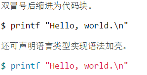

文档编辑¶
文档编辑的核心在于 文本编辑器 和 reStructuredText语法
rst基本语法¶
标题¶
- 一级标题：
======== - 二级标题：
-------- - 三级标题：
~~~~~~~~ - 四级标题：
^^^^^^^^ - 五级标题：
++++++++ - 六级标题：
````````
代码块¶
| 代码示例 | 输出示例 |
|---|---|

|

定义¶
| 代码示例 | 输出示例 |
|---|---|

|
字体¶
- 粗体和斜体
| 代码示例 | 输出示例 |
|---|---|
- 删除线
| 代码示例 | 输出示例 |
|---|---|
- 下划线
| 代码示例 | 输出示例 |
|---|---|
- 上标、下标
| 代码示例 | 输出示例 |
|---|---|
- 等宽字体
| 代码示例 | 输出示例 |
|---|---|
- 引言
| 代码示例 | 输出示例 |
|---|---|
- 清除标记空白
| 代码示例 | 输出示例 |
|---|---|
图片¶
| 代码示例 | 输出示例 |
|---|---|
表格¶
| 代码示例 | 输出示例 |
|---|---|
注意¶
- 各种标记字符与其它文本内容之间最好留一个空格，否则会报语法警告